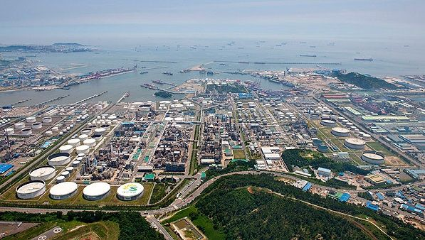

대한민국의 정유업체로, SK에너지, GS칼텍스, 현대오일뱅크와 함께 4대 정유사로 불린다. 2017년 5월 기준으로 대한민국 재계서열 22위이다. 본사는 서울특별시 마포구 백범로 192 (공덕동)에 위치해 있다. 63빌딩에 세들어 살았으나 공덕역 로터리 앞에 2011년 6월 27일부로 신사옥을 완공하고 이전하였다. 사우디아라비아 아람코의 자회사 AOC가 63.4%의 지분으로 최대 주주다. 주요 사업은 정유제품, 윤활기유, 윤활유, 석유화학 제품의 제조·판매·수송, 수출입 등이며 휘발유 수출 비중은 47%. SK에너지(53%)나 GS칼텍스(62%)에 비해서는 그나마 양반이라고 해야 하나. 그 외에는 주가도 잘 오르는 편이어서 '섹시오일'이라는 별명이 있었다.
2007년 에쓰-오일의 자사주 31,983,000주(28.41%)를 인수하여 AOC와 공동경영할 파트너를 찾는 인수전에서 한진그룹이 대림그룹·STX그룹·롯데그룹 등의 경쟁자를 물리치고, 주당 74,979원 총액 약 2조 4,000억원에 인수에 성공하였다. 한진그룹에서는 이 인수를 통해 단순히 외연확장이 아니라, 주력계열사인 육상운송의 (주)한진 / 해상운송의 한진해운 / 항공운송의 대한항공 등이 해마다 수조원의 유류비를 지출하는데 비해 당시 유가가 오르던 상황에서 추가적인 유류비 상승 부담을 유가상승시 수익성이 상승하는 정유사를 보유함으로서 헷지할수 있고, 에스오일의 원유·석유제품 운송 물량을 획득할 수 있으며, 당시 대우건설·대한통운을 인수하며 자산순위에서 한진그룹을 제친 운송라이벌 금호그룹에 대항할 수 있다는 계산이었지만, 2014년에 한진그룹에서 자회사인 한진해운의 실적 부진을 만회할 자금을 수급하기 위해 보유하고 있던 에스오일 지분 전체를 아람코에 1조 9,830억원에 매각하고 한진그룹측 이사들이 퇴진하면서, 아람코와 한진그룹의 에스오일 공동경영은 끝마치게 되었다.
2008년 토탈이수오일을 인수한 후 2011년 상반기에 이른바 차화정이라면서 주가가 크게 올랐지만, 8월 들어서 오른만큼 크게 빠지고 있다. 같은 해 한국실리콘 지분을 일부 사들이고 2017년 동북화학을 인수했다. 2006년부터 2011년까지 김태희, 차승원, 싸이, 손예진, 최민식, 박찬욱, 유재석, 정형돈, 윤아, 아이유 등 수많은 유명인 스타들을 광고 모델로 내세웠다.
본사 : 서울특별시 마포구 백범로 192 (공덕동)
온산공장 : 울산광역시 울주군 온산읍 온산로 68 (방도리)
